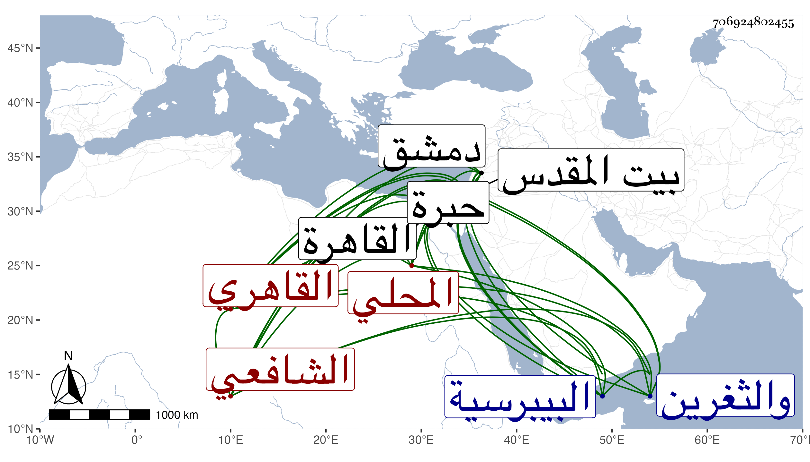

0902Sakhawi.DawLamic.ITO20230111-ara1.EIS1600.706924802455
Biography ID: 706924802455
176
عبد الرحمن بن أحمد بن محمد بن أحمد بن عرندة جلال الدين بن الشهاب المحلي الأصل القاهري الشافعي الماضي أبوه ويعرف بابن الوجيزي لحفظ والده الوجيز للمغزالي . ولد في ذي الحجة سنة ثمان وثمانين وسبعمائة بالقاهرة ونشأ بها فحفظ القرآن والعمدة والمنهاج الفرعي وغيرها ، وعرض علي الزين العراقي والكمال الدميري وجود القرآن على الزراتيتي وأخذ الفقه عن البرهان البيجوري وغيره والنحو عن الشمسين الشطنوفي والبرماوي ومن شيوخه والده والشمس الغراقي والولي العراقي وغيرهم ممن هو أقدم منهم ودونهم وبرع في الفضائل وتنزل في الجهات كدرسي الحديث بالبيبرسية والجمالية ونسخ بخطه الكثير ومن ذلك شرح البخاري لشيخنا ، وكان أولا ممن يلازم الحضور هو ووالده عنده ووصفه بالشيخ الفاضل وكتب عنه في الأمالي وحج مرتين الأولى في سنة خمس وعشرين وجاور أشهرا ودخل دمشق والثغرين وزار بيت المقدس والخليل ثم أعرض عن الاشتغال ولواحقه وتوجه لاستحذاء من شاء الله من الرؤساء ونحوهم بحكايات ينمقها ويسردها بفصاحة عندهم مع ظرف ولطف وإكثار لادارة لسانه أو شفته وربما تستر باظهار ما يشبه الجنون مع كونه من العقلاء بحيث كان يقال هما إثنان عاقل يتمجنن ومجنون يتمعقل ويعني هذا والبدر بن الشريدار ، وحكيت في الجواهر شيئا مما وقع له من ذلك مع شيخنا على أن بعضهم قال إن سبب هذا سوء مزاج وانحراف كما وقع لأبيه فقد وصفه بهما شيخنا ومما كان يزعمه قول ابن الجزري فيه :
| إذا رمت التفنن في المعاني | وتملك مهجة الملك العزيز |
| فبادر نحو شيخ الوقت حقا | ودائرة العلا القطب الوجيزي |
وقال التقي بن حجة أيضا :
| إذا رمت التفقه في المعاني | لما ترجوه من ملك عزيز |
| عليك بمن غدا في الناس قطبا | وبادر للتبرك بالوجيزي |
في آخرين كالابناسي الصغير والبشتكي والجمال البهنسي والنواجي وابن اقبرس والحجازي فالله أعلم ، وهو ممن سمع علي الصلاح الزفتاوي وابن أبي المجد والتنوخي وابن الشيخة والعراقي والهيثمي والابناسي والغماري والزين المراغي والقاضي ناصر الدين نصر الله الحنبلي والتاج بن الفصيح والحلاوي والسويداوي والشرف ابن الكويك والبدر النسابة وغيرهم ، وحدث باليسير سمع عليه الفضلاء سمعت عليه قطعة من البخاري مع الختم منه بل قرأت عليه أحاديث من الموطأ ولو ترك ما سلكه واستمر على طريقته الأولى لكان أشبه . مات في ثاني ذي القعدة أو آخر شوال سنة اثنتين وخمسين ودفن بحوش البيبرسية عند أبيه رحمهما الله وعفا عنهما .
